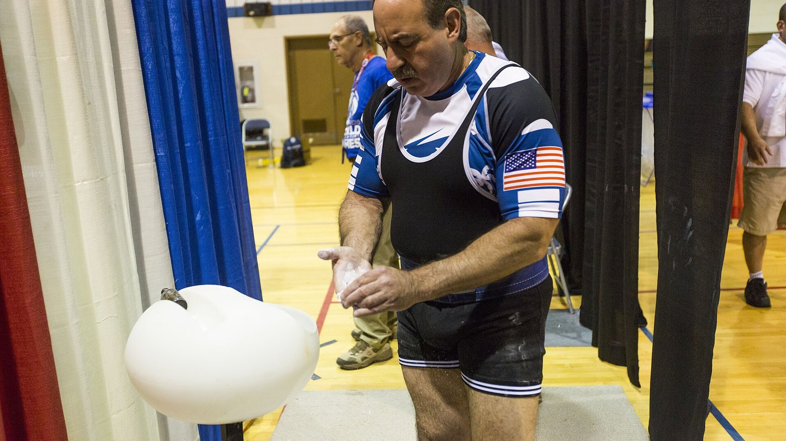
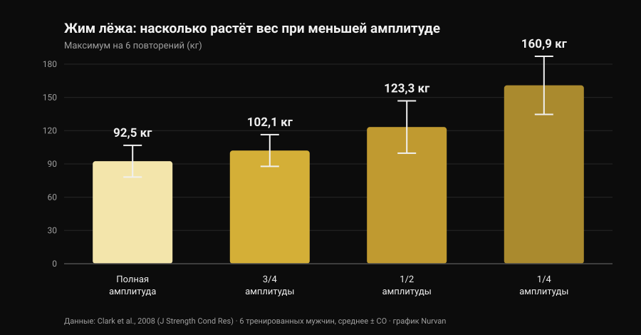
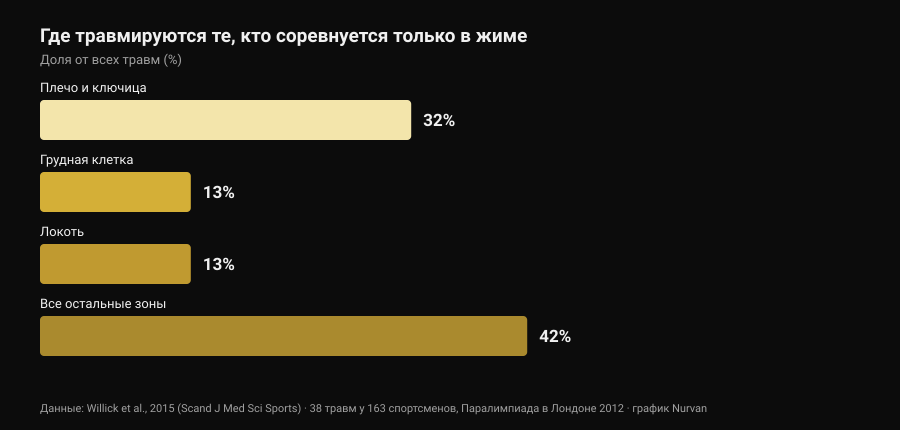

Хват «бульдог» в жиме лёжа: что говорят исследования
В ленте попался технический пост про хват «бульдог» в жиме лёжа: предплечье развёрнуто внутрь, гриф лежит по диагонали на ладони, обещание меньшей нагрузки на локоть и большей устойчивости. Описание честное, и часть сообщества пользуется этим хватом годами. Потом я пошёл смотреть, сколько раз этот хват измеряли в научной литературе. Ноль. Это не повод его отбрасывать — это повод рассказать о нём как есть и использовать данные, которые действительно существуют: об амплитуде движения и о том, где на самом деле травмируются те, кто жмёт.

Коротко
- Ни одно индексированное исследование его не измеряло. Поиск «bulldog grip» в PubMed даёт ноль результатов (проверено 29 октября 2026 года): ни электромиографии, ни сравнения весов, ни данных о боли и травмах.
- Правило IPF говорит не то, что повторяют. Технический регламент, действующий с 1 марта 2026 года, требует, чтобы «кисти, большие пальцы и пальцы полностью обхватывали гриф, с большим пальцем вокруг штанги», и запрещает обратный хват. Слова «бульдог» в нём нет.
- Короче амплитуда — больше килограммов, но не адаптаций. Максимум на 6 повторений растёт с 92,5 кг при полной амплитуде до 160,9 кг при четверти амплитуды (Clark et al., 2008). Но за десять недель тренировок полная амплитуда обошла все частичные варианты во всех проверенных вариациях (Martínez-Cava et al., 2022).
- Локоть — не главная проблема жима. В виде спорта, который состоит из одного жима, на плечо и ключицу приходится 32% травм, на локоть — 13% (Willick et al., 2015).
- После 40 лет локоть весит больше. У 245 пауэрлифтеров частота травм локтя и кисти/запястья значимо растёт после 40 лет (Siewe et al., 2011).
Что такое хват «бульдог», простыми словами
В хвате, которым пользуются почти все, гриф лежит примерно посередине ладони, а предплечье остаётся нейтральным. В хвате «бульдог» вы разворачиваете предплечье внутрь — анатомически это внутренняя ротация, движение, уводящее большой палец к телу, — и гриф оказывается уложенным по диагонали на ладони, ближе к основанию большого пальца, а не к центру кисти.
Отсюда следуют три последствия. Они геометрические, а не экспериментальные:
- запястье лучше «складывается» над предплечьем, меньше вынужденного разгибания;
- гриф опирается ближе к стороне мизинца, поэтому касается груди чуть выше;
- локоть разводится немного шире, потому что ротация предплечья тянет его наружу.
Все три пункта правдоподобны и проверяются линейкой. Ни один из них не является результатом лабораторного измерения.
Чего у науки нет — и почему это важно
Я искал в PubMed 29 октября 2026 года: «bulldog grip» не даёт ни одной работы. По жиму лёжа есть приличная литература о ширине хвата — мы разбирали её в материале ширина хвата в жиме лёжа: широкий или узкий, — но ротацию запястья не измерял никто: ни активность сгибателей предплечья, ни поднятые веса, ни боль в локте.
Значит, утверждение «хват бульдог снижает активацию сгибателей запястья и потому разгружает локоть» — это разумная механическая гипотеза, которую никто не проверял. Тот, кто им пользуется и чувствует себя лучше, не ошибается в своём опыте: он сообщает личный факт, верный для него. Нельзя лишь превращать этот факт в общую рекомендацию и называть это наукой.
Регламент IPF: что там написано на самом деле
Именно здесь живёт самое распространённое заблуждение, и текст стоит прочитать вместо пересказов. Технический регламент IPF, действующий с 1 марта 2026 года, вводит два условия для хвата в жиме лёжа:
- кисти, большие пальцы и пальцы должны полностью обхватывать гриф, большой палец обёрнут вокруг штанги;
- обратный хват запрещён, а расстояние между указательными пальцами не может превышать 81 см.
Показательно сравнение с приседанием, где тот же регламент прямо пишет, что «большие пальцы обхватывать гриф не обязаны». В жиме такого исключения нет: обёрнутый большой палец обязателен.
Что из этого следует? Что регламент нигде не называет хват «бульдог», и «бульдог» с обёрнутым большим пальцем и полной кистью на грифе не нарушает ни одной из этих строк. Красный свет загорается за другое: за хват без большого пальца (так называемый suicide grip), за обратный хват, за указательные пальцы вне отметок 81 см — и, что прямо касается тех, кто доводит ротацию до крайности, за кисть, которая лежит на грифе только кончиками пальцев, а не обхватывает его полностью.
Если вы выступаете, практический вывод прост: покажите свой хват судье на разминке, а не в середине первого подхода. Национальные федерации применяют тот же текст, но в день соревнований важно только то, насколько «полным» сочтёт ваш обхват конкретный судья.
Меньше амплитуды, больше килограммов: цифра, которая всё расставляет
Одну часть разговора про «бульдог» можно привязать к твёрдым числам — это амплитуда движения. Если при той же ширине хвата гриф касается груди выше, путь увеличивается; если вы меняете ещё и ширину, путь может укоротиться. В обоих случаях вы двигаете переменную, которая весит очень много.
Насколько много, показала работа 2008 года: шесть тренированных мужчин проверили свой максимум на 6 повторений в жиме лёжа на четырёх разных амплитудах.

От полной амплитуды до четверти вес почти удваивается. Та же закономерность видна на гораздо большей выборке: у 42 тренированных мужчин максимум последовательно рос при переходе от полной амплитуды к двум третям и к одной трети (Martínez-Cava et al., 2019).
Проблема в том, что происходит со временем. В рандомизированном исследовании 50 мужчин прошли десять недель одинаковой программы, различавшейся только тренируемой амплитудой: группа полной амплитуды показала лучшие результаты во всех трёх проверенных вариациях жима, а частичные группы прибавляли тем меньше, чем короче была амплитуда (Martínez-Cava et al., 2022). В паралимпийском пауэрлифтинге, где жим — весь вид спорта, работа в частичной амплитуде позволяет брать более тяжёлые веса с меньшей потерей функции к концу сессии, но активация большой грудной мышцы — ключичной и грудинной частей — выше при полной амплитуде (Mendonça et al., 2021).
Перевод для тех, кто присматривается к «бульдогу»: если килограммы внезапно поехали вверх, прежде чем радоваться, посмотрите, где касается гриф. Если он касается ниже, потому что вы расширили хват, часть прибавки — это геометрия. Верно и обратное, и исходный пост отмечает это правильно: при той же ширине более высокая точка касания удлиняет путь и делает движение тяжелее, а не легче.
Локоть: где на самом деле травмируются те, кто жмёт
Главный аргумент в пользу «бульдога» — облегчение для локтя. Стоит поставить этот локоть в пропорцию.

Паралимпийский пауэрлифтинг — фактически вид спорта из одного жима лёжа: это самая чистая выборка, какая у нас есть, чтобы понять, где ломается тот, кто жмёт. У 163 спортсменов зафиксировано 38 травм, 61% из них — хроническая перегрузка. Самая поражаемая зона — плечо с ключицей (32%); грудная клетка и локоть идут следом, поровну по 13%.
В остальных силовых видах картина та же: систематический обзор Keogh и Winwood называет плечо, поясницу, колено, локоть и запястье/кисть самыми частыми зонами, примерно одна травма на 1000 часов тренировок в пауэрлифтинге. Среди 245 немецких пауэрлифтеров 43,3% сообщали о дискомфорте во время обычных тренировок, не прерывая их, а частота травм локтя и кисти/запястья значимо росла после 40 лет (Siewe et al., 2011).
Два практических вывода. Первый: если болит локоть, хват — маленький рычаг рядом с весом, объёмом, частотой и прогрессией, и смотреть надо сначала туда. Второй, более тонкий: крайняя внутренняя ротация закрывает положение плеча, а обзор 2024 года называет именно уязвимое положение сустава во время подъёма среди факторов риска травмы плеча в силовых видах (Daher et al., 2024). Менять дискомфорт в локте на проблему с плечом — плохая сделка: плечо травмируется чаще всего.
Что на самом деле говорят исследования
«Хват бульдог снижает активацию сгибателей запястья и щадит локоть» Ноль индексированных исследований, никакой электромиографии. Это механическая гипотеза, а не результат.
«Он даёт более высокую точку касания и более естественный развод локтей» Геометрия держится: ротация предплечья смещает гриф к стороне мизинца. Насколько реально меняется угол локтя, никто не измерял.
«При той же ширине более высокая точка касания увеличивает амплитуду, значит тяжелее» Согласуется со связью амплитуды и веса: длиннее путь — меньше килограммов.
«Сокращать амплитуду выгодно» Вес растёт заметно (с 92,5 до 160,9 кг между полной и четвертью амплитуды), но за десять недель тренировок полная амплитуда даёт больше адаптаций во всех вариациях.
«IPF запрещает его, потому что требует обхвата большим пальцем» Регламент 2026 года не называет «бульдог»: он запрещает обратный хват и требует, чтобы кисти, большие пальцы и пальцы полностью обхватывали гриф. «Бульдог» с обёрнутым большим пальцем удовлетворяет обоим условиям.
«Он помогает новичкам, которые слишком прижимают локти» Нет данных о новичках, технике и хвате. К тому же в жиме чаще травмируется плечо, а не локоть.
Как это применить
- Если ничего не болит и цифры растут, не меняйте хват из-за моды. Хват, которым вы пользуетесь годами, — это ещё и хват, на котором построена ваша техника: смена отнимет часть этого автоматизма на несколько недель.
- Если пробуете, держите большой палец обёрнутым и всю кисть на грифе. Это версия, которая остаётся внутри регламента, и та, в которой штанга не сможет уйти.
- Измерьте точку касания до и после. Отметьте, где гриф ложится на грудь со старым хватом и с новым: только так вы поймёте, изменили вы хват или амплитуду.
- Дайте ему три-четыре недели и числовой критерий. Тот же вес, то же число подходов, та же точка касания: если при том же RIR (повторения в запасе) вес не двигается, хват вам ничего не даёт.
- Если болит локоть, сначала смотрите на программу. Скачки веса, слишком много подходов около отказа и ни одной разгрузочной недели объясняют гораздо больше, чем ротация запястья. Логика подходов, отдыха и прогрессии — в материале сколько повторений нужно для роста мышц.
- Боль, которая длится неделями или будит ночью, — не вопрос хвата. Это тема для медицинского специалиста, а не для поста.
- Если выступаете, спросите судью заранее. Тридцать секунд на разминке стоят больше любой подписи под постом.
Попробовать Nurvan — если меняете хват, пусть решают цифры
Техническое изменение оценивают неделями, а не одной тренировкой: нужно видеть вес, повторения и RIR одного и того же движения рядом, с пометкой, что и когда вы поменяли. В Nurvan вы записываете каждый подход в жиме вместе с RIR, добавляете заметку об использованной вариации и получаете кривую весов по месяцам — так вопрос «добавил ли мне бульдог килограммы?» получает ответ, а не ощущение. Разминочные подходы при этом предлагаются автоматически от рабочего веса дня — именно то, что нужно, пока новый хват ещё непривычен.
Частые вопросы
Что такое хват «бульдог» в жиме лёжа?
Это хват, при котором вы разворачиваете предплечье внутрь и кладёте гриф по диагонали на ладонь, ближе к основанию большого пальца, а не к центру кисти. Запястье остаётся ровнее относительно предплечья, а гриф касается груди чуть выше. Это не хват без большого пальца: при правильном исполнении большой палец остаётся обёрнутым вокруг штанги.
Разрешён ли хват «бульдог» на соревнованиях IPF?
Технический регламент IPF, действующий с 1 марта 2026 года, его не называет. Он требует, чтобы кисти, большие пальцы и пальцы полностью обхватывали гриф с обёрнутым большим пальцем, и запрещает обратный хват: «бульдог» с обёрнутым большим пальцем и полной кистью на грифе отвечает обоим условиям. Вне правил остаются хват без большого пальца, обратный хват и кисть, лежащая на грифе только кончиками пальцев. Если сомневаетесь, покажите хват судье до выхода на помост.
С хватом «бульдог» жмут больше?
Ни одно исследование этого не измеряло. Если в ваших тестах вес вырос, самая вероятная причина — не сам хват, а амплитуда движения: при прочих равных укорочение пути сильно повышает поднимаемый вес, тогда как более высокая точка касания при той же ширине удлиняет путь и делает движение тяжелее.
Вреден ли хват «бульдог» для плеч?
Прямых данных нет. Известно лишь, что плечо — самая поражаемая зона у тех, кто соревнуется в жиме (32% травм), и что среди задокументированных факторов риска есть уязвимое положение сустава во время подъёма. Поэтому выраженную внутреннюю ротацию стоит вводить постепенно и убирать, если появляется дискомфорт в плече.
Читайте также
- Ширина хвата в жиме лёжа: широкий или узкий? — что реально меняется для груди и трицепса при изменении ширины, с цифрами.
- Жим гантелями или разведения: что растит грудь? — жим против изоляции для грудных.
- Сколько повторений нужно для роста мышц: миф 8-12 — подходы, отдых и прогрессия, рычаги весомее хвата.
Источники
- Clark RA, Bryant AL, Humphries B, 2008. An examination of strength and concentric work ratios during variable range of motion training. Journal of Strength and Conditioning Research 22(5):1716-9. PMID 18714211 · DOI 10.1519/JSC.0b013e318173c529
- Martínez-Cava A, Morán-Navarro R, Hernández-Belmonte A, Courel-Ibáñez J, Conesa-Ros E, González-Badillo JJ, Pallarés JG, 2019. Range of Motion and Sticking Region Effects on the Bench Press Load-Velocity Relationship. Journal of Sports Science & Medicine 18(4):645-652. PMID 31827348
- Martínez-Cava A, Hernández-Belmonte A, Courel-Ibáñez J, Morán-Navarro R, González-Badillo JJ, Pallarés JG, 2022. Bench Press at Full Range of Motion Produces Greater Neuromuscular Adaptations Than Partial Executions After Prolonged Resistance Training. Journal of Strength and Conditioning Research 36(1):10-15. PMID 31567719 · DOI 10.1519/JSC.0000000000003391
- Mendonça TP, Aidar FJ, Matos DG, Souza RF, Marçal AC, Almeida-Neto PF, Cabral BG, Garrido ND, Neiva HP, Marinho DA, Marques MC, Reis VM, 2021. Force production and muscle activation during partial vs. full range of motion in Paralympic Powerlifting. PLoS One 16(10):e0257810. PMID 34644331 · DOI 10.1371/journal.pone.0257810
- Willick SE, Cushman DM, Blauwet CA, Emery C, Webborn N, Derman W, Schwellnus M, Stomphorst J, Van de Vliet P, 2015. The epidemiology of injuries in powerlifting at the London 2012 Paralympic Games: An analysis of 1411 athlete-days. Scandinavian Journal of Medicine & Science in Sports 26(10):1233-8. PMID 26453890 · DOI 10.1111/sms.12554
- Siewe J, Rudat J, Röllinghoff M, Schlegel UJ, Eysel P, Michael JW-P, 2011. Injuries and overuse syndromes in powerlifting. International Journal of Sports Medicine 32(9):703-11. PMID 21590644 · DOI 10.1055/s-0031-1277207
- Keogh JWL, Winwood PW, 2017. The Epidemiology of Injuries Across the Weight-Training Sports. Sports Medicine 47(3):479-501. PMID 27328853 · DOI 10.1007/s40279-016-0575-0
- Daher M, Jabre S, Casey JC, Fares MY, Boufadel P, Lopez R, Lawand J, Mansour J, Abboud JA, 2024. Shouldering the load: A scoping review of incidence, types, and risk factors of shoulder injuries in weight-lifting athletes. Shoulder & Elbow 17(3):254-263. PMID 39552690 · DOI 10.1177/17585732241258743
- International Powerlifting Federation, 2026. IPF Technical Rules Book, действует с 1 марта 2026 года, раздел 4.2 (Bench Press — Rules of Performance). Официальный PDF
Литература найдена через PubMed. Отправная точка: пост Alfred Jong (alfred.reformance, Reformance Training) от 25 сентября 2026 года, оригинальный пост. Из поста прочитаны только автор, дата и подпись: ни текст, ни изображения не воспроизводились. Тема написана с нуля по первичным источникам и официальному регламенту.
Giammaria Loi — основатель Nurvan. Тренируется с отягощениями с 2012 года, работает персональным тренером и коучем с сертификацией FIPE с 2013 года и выступает в пауэрлифтинге на национальном уровне с 2018 года. Каждая статья за его подписью начинается с исследований и заканчивается тем, что действительно работает в зале.
Примечание: информационный материал, не заменяет консультацию врача или специалиста. При стойкой боли в локте, запястье или плече, а также если дискомфорт усиливается несмотря на снижение нагрузки, обратитесь к врачу или физиотерапевту вместо поиска решения в техническом нюансе.